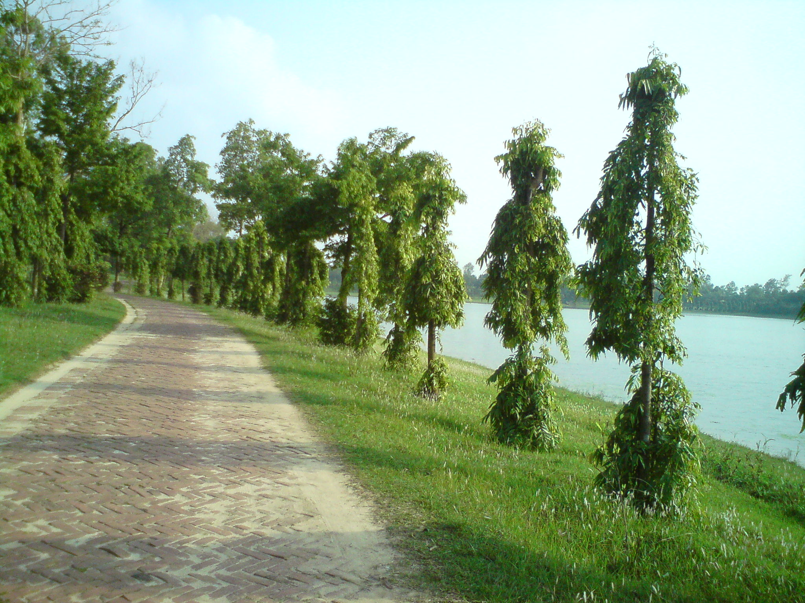

This fabulously embellished temple situated about 19.32km north of Dinajpur town. Maharaja Pran Nath built it in 1752. It was originally a Navaratna (nine- towered) temple. Every inch of its surface is lavishly decorated with different scenes as described in the two Hindu Great Epics, various Hindu divinities, contemporary social life and floral cum geometric motifs.One can start his journey for the monument from Dinajpur town or Sayedpur Airport by any kind of motorized vehicle. How to go The temple is about a 1 mile west of Dinajpur-Thakurgaon Highway across the Dhepa River. Various types of communications like Bus, Motor bike and Rickshaw van can get you there within hours from the Town. You have to get off the bus at the Place called ‘Kantanagar’, if you choose to walk and enjoy the country atmosphere. However the journey will be a little lengthy, if you go there by Auto rickshaw. Accomodation Dinajpur has some economy accommodation for your stay, just you need a booking before the start. There are two types of accommodations are: government rest houses situated at different locations across the town, while privately held are enough and affordable for you. Circuit House(teleph. 0531-63112), located west of Bara Maidan is handled by the District Authority, while Parajatan Motel(teleph. 0531-64710)located at New town Housing, is a bit expensive for ordinary travelers, however the facilities are much better than others. Ram Sagar Rest house (telph. 0531-65558) located 6km south of the town at Ram Sagar tank will be an awesome place for nature lovers, but no food is available there. You will have to arrange by yourself. Privately held Diamond Hotel(telepone.0531-64629) is renowned for its wide accommodation facilities. There are two hotels( Diamond 1, Diamond 2)under the same name, facing one another, located at Maldapatty in Dinajpur town. They have their own food facilities available near them at Bashuniapatty, 1 minute of walk away. Hotel Sonar Tari(teleph.+8801716018995) at Modern More, Ganeshtala, Hotel Unique (+8801736335264) at Nimatala, New Hotel (0531-64155) and Hotel Konica (+880181829572) at Station Road in Dinajpur are also some notable hotels for your stay. Excluding these 3 pre historic sites, there are still many other points of archeological interests located in the Northern part of Bangladesh.
Sitakot Vihara
Situated in village Fatehpur Maras under Nowabgonj thana of Dinajpur District, the site has yielded the impoverished remains of a brick-built Buddhist monastery. It is medium in size, roughly 65.5m each side, and has yielded a number of movable antiquities, i.e. bronze sculptural pieces of Mahayana origin, iron dagger, terracotta net-sinker, terracotta cone, carved brick, potteries of early medieval origin etc.. On ground of style they are datable to the circa 7th-8th century AD.To reach at the site one can start his journey from Dinajpur zero point by any kind of motorized vehicle comfortably.
RamSagar
 Situated in village Fatehpur Maras under Nowabgonj thana of Dinajpur District, the site has yielded the impoverished remains of a brick-built Buddhist monastery. It is medium in size, roughly 65.5m each side, and has yielded a number of movable antiquities, i.e. bronze sculptural pieces of Mahayana origin, iron dagger, terracotta net-sinker, terracotta cone, carved brick, potteries of early medieval origin etc.. On ground of style they are datable to the circa 7th-8th century AD.To reach at the site one can start his journey from Dinajpur zero point by any kind of motorized vehicle comfortably.